Pink-gilled
hypselodoris nudibranch
Hypselodoris sp.
Family
Chromodorididae
updated May 2020
Where
seen? This small colourful nudibranch is sometimes seen in numbers on our
Northern shores. On coral rubble and rocky shores with sponges and
encrusting animals.
Features: 2-3cm. Body long, narrow
with a long tail. Pale with bright spots. Large flower-like gills
on the back and large rhinophores (relative to the body size). Gills
are frilly and edged in bright pink, without spots. See also Dr
Bill Rudman's comments on this nudibranch. |
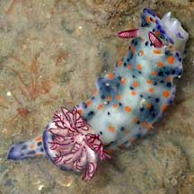
Changi, Jun 02
|
|
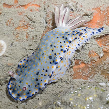
Changi,
Jun 12 |
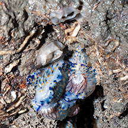
Mating and laying eggs.
Changi, Jun 12 |
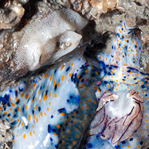
Closer look at egg ribbon. |
|
| Pink-gilled hypselodoris
nudibranchs on Singapore shores |
| Other sightings on Singapore shores |
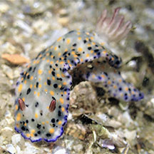
Punggol, Sep 18
Photo shared by Dayna Cheah on facebook. |
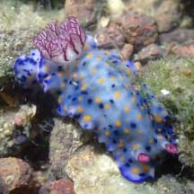
Punggol, May 22
Photo shared by Richard Kuah on facebook. |
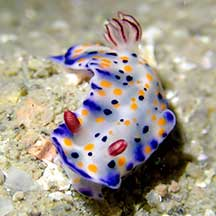
Pasir Ris Park, Dec 20
Photo shared by Jianlin Liu on facebook. |
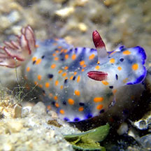
Changi, Jun 20
Photo shared by Jianlin Liu on facebook. |
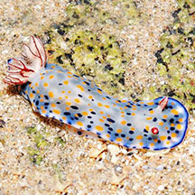
Pulau Ubin, Dec 12
Photo shared by Loh Kok Sheng on flickr. |
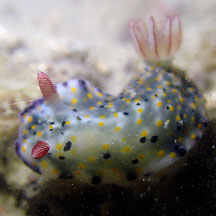
Beting Bronok, Jun 25
Photo by Jianlin Liu on facebook. |
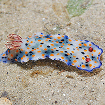
Chek Jawa, Jan 14
Photo shared by Loh Kok Sheng on facebook. |
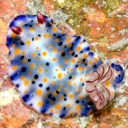
Chek Jawa, May 25
Photo shared by Loh Kok Sheng on facebook. |
|
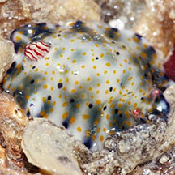
Tanah Merah, Dec 11
Photo shared by James Koh on flickr. |
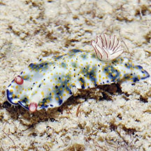
Tanah Merah, Dec 11
Photo shared by Loh Kok Sheng on flickr. |
|
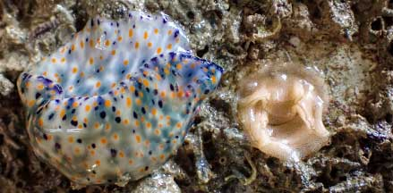
East Coast (PCN), May 21
Photo shared by Vincent Choo on facebook. |
|
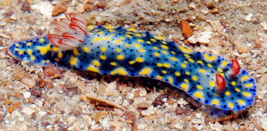
Beting Bronok, Jun 14
Photo shared by Loh Kok Sheng on flickr. |
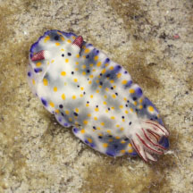
Beting Bronok, Jul 19
Photo shared by Abel Yeo on facebook. |
Acknowledgements
Thanks
to Toh Chay Hoon for sorting out the Hypselodoris from the
Chromodoris photos.
Links
References
- Tan Siong
Kiat and Henrietta P. M. Woo, 2010 Preliminary
Checklist of The Molluscs of Singapore (pdf), Raffles
Museum of Biodiversity Research, National University of Singapore.
- Debelius,
Helmut, 2001. Nudibranchs
and Sea Snails: Indo-Pacific Field Guide
IKAN-Unterwasserachiv, Frankfurt. 321 pp.
- Wells, Fred
E. and Clayton W. Bryce. 2000. Slugs
of Western Australia: A guide to the species from the Indian to
West Pacific Oceans.
Western Australian Museum. 184 pp.
- Coleman,
Neville. 2001. 1001
Nudibranchs: Catalogue of Indo-Pacific Sea Slugs. Neville
Coleman's Underwater Geographic Pty Ltd, Australia.144pp.
- Humann, Paul
and Ned Deloach. 2010. Reef
Creature Identification: Tropical Pacific New World Publications.
497pp.
- Coleman,
Neville, 1989. Nudibranchs
of the South Pacific Vol 1. 64 pp.
|
|
|